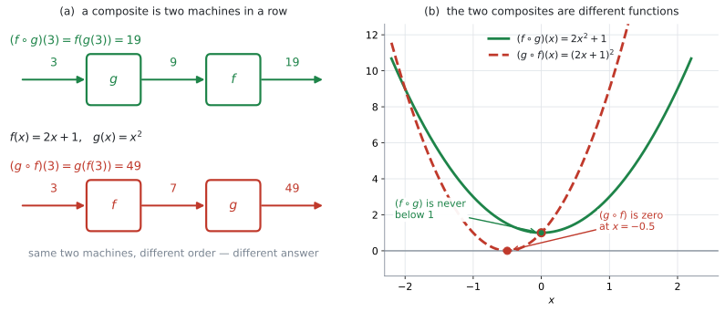
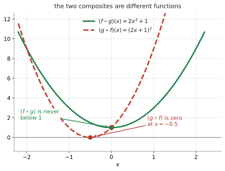
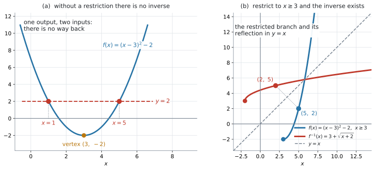

AHL 2.7 — Composite and inverse functions（合成関数と逆関数）
- composite function（合成関数）\((f \circ g)(x) = f(g(x))\) を、内側から順に計算できる。
- \((f \circ g)\) と \((g \circ f)\) が別の関数であることを、値と式の両方で示せる。
- 文脈のなかで「どちらを先に通すか」を決め、その合成が何を表すかを説明できる。
- \(y = f(x)\) を \(x\) について解いて、\(f^{-1}(x)\) の式を求められる。
- \((f \circ f^{-1})(x) = (f^{-1} \circ f)(x) = x\) を使って、求めた逆関数を検算できる。制限つきのときは、制限した範囲の中の数で往復させて確かめられる。
- \(f(x) = (x-3)^2 - 2\) のような関数に、なぜ domain restriction（定義域の制限）が要るのかを説明できる。
ありません。
公式集の Topic 2 の HL の部分にあるのは、Prior learning の quadratic formula と、2.1、2.5、2.9 だけです。合成関数の記号も、逆関数の求め方も、印刷されていません。
つまり、\((f \circ g)(x) = f(g(x))\) という記号の意味と、\(f^{-1}\) を求める手順は、自分で持っておく必要があります。とはいえ、覚えることは多くありません。この項目は、式を覚える項目ではなく、順番を間違えない項目です。
Content 欄の \(4\) 行は、\((f \circ g)(x) = f(g(x))\) の記号、文脈のなかでの合成、\(f^{-1}\) を求めること、そして domain restriction です。Guidance 欄には \((f \circ f^{-1})(x) = (f^{-1} \circ f)(x) = x\) と、\(1\) つの例が挙がっています。
Example: \(f(x) = (x-3)^2 - 2\) has an inverse if the domain is restricted to \(x \geq 3\) or to \(x \leq 3\).
シラバスが名指しした関数なので、例 4 でそのまま扱います。
逆関数そのものは SL 2.2 で一度出ていますが、そこは Informal concept（大まかな考え方）どまりでした。HL で新しく足されるのは、\(f^{-1}(x)\) の式を実際に求めることと、domain restriction です。
The idea
1. 合成関数は、機械を \(2\) 台つないだものです
\(f\) と \(g\) を、\(2\) 台の機械だと思ってください。\(1\) 台目から出てきたものを、そのまま \(2\) 台目に入れる。 これが composite function（合成関数）です。

図 1 を見てください。\(f(x) = 2x+1\)、\(g(x) = x^{2}\) として、\(3\) を入れます。
上の列は、\(g\) を先に通した場合です。\(3 \to 9 \to 19\) と進みます。
\[ f(g(3)) = f(9) = 2(9)+1 = 19 \]
下の列は、\(f\) を先に通した場合です。\(3 \to 7 \to 49\) と進みます。
\[ g(f(3)) = g(7) = 7^{2} = 49 \]
同じ \(2\) 台でも、つなぐ順番が変われば、出てくる数が変わります。
2. \((f \circ g)(x)\) は、内側から読みます
シラバスが指定している記号は、次のものです。
\[ (f \circ g)(x) = f(g(x)) \tag{1}\]
\(\circ\) は「composed with」と読みます。\((f \circ g)\) は「\(f\) composed with \(g\)」です。
ここがこの項目で最初につまずくところです。\((f \circ g)\) と書いてあっても、先に働くのは \(g\) のほうです。
式 1 の右辺 \(f(g(x))\) を見れば、迷いません。かっこの内側にあるものが、先です。
| 書き方 | 先に働くのは | 意味 |
|---|---|---|
| \((f \circ g)(x)\) | \(g\) | \(x \to g \to f\) |
| \(f(g(x))\) | \(g\) | 同じもの |
| \((g \circ f)(x)\) | \(f\) | \(x \to f \to g\) |
| \(g(f(x))\) | \(f\) | 同じもの |
試験で \((f \circ g)(2)\) と問われたら、答案の \(1\) 行目に
\[ (f \circ g)(2) = f(g(2)) \]
と書いてしまうのが確実です。この \(1\) 行を書くだけで、順番の取り違えはほぼ防げます。
3. 順番を変えると、別の関数になります
値だけでなく、式そのものが変わります。 \(f(x) = 2x+1\)、\(g(x) = x^{2}\) で確かめます。
\((f \circ g)(x)\) は、\(f\) の \(x\) のところに \(g(x) = x^{2}\) を入れます。
\[ (f \circ g)(x) = f\left(x^{2}\right) = 2x^{2}+1 \]
\((g \circ f)(x)\) は、\(g\) の \(x\) のところに \(f(x) = 2x+1\) を入れます。
\[ (g \circ f)(x) = g(2x+1) = (2x+1)^{2} = 4x^{2}+4x+1 \]

図 2 が、この \(2\) つのグラフです。頂点の位置も、開き方も違います。
読み方に迷ったら、表 1 に戻ってください。
\(x = 3\) を入れれば、\(2(9)+1 = 19\) と \((7)^{2} = 49\) で、図 1 と合います。
\(\circ\) は掛け算の記号ではありません。
\[ f(x) \times g(x) = (2x+1)\left(x^{2}\right) = 2x^{3}+x^{2} \]
これは \((f \circ g)(x) = 2x^{2}+1\) とも \((g \circ f)(x) = 4x^{2}+4x+1\) とも違います。\(3\) つとも別の関数です。
4. 文脈のなかの合成関数
Content 欄の \(1\) 行目は Composite functions in context. です。現実の場面で、\(2\) つの処理を続けて行うときに使います。
ある店で、\(x\) 円の商品に次の \(2\) つの処理をします。
- 割引 … \(d(x) = x - 500\)（\(500\) 円引き）
- 消費税 … \(t(x) = 1.1x\)（\(10\%\) の税を加える）
この \(2\) つは、\(x \geq 500\) の商品に使います。\(500\) 円未満の商品では、割引後が負の値になってしまうからです。
順番が \(2\) 通りあります。
\[ (t \circ d)(x) = t(x-500) = 1.1(x-500) = 1.1x - 550 \]
\[ (d \circ t)(x) = d(1.1x) = 1.1x - 500 \]
\(x = 3000\) で比べます。
| 順番 | 意味 | \(x = 3000\) のとき |
|---|---|---|
| \((t \circ d)(x) = 1.1x - 550\) | 割引してから、課税する | \(2750\) 円 |
| \((d \circ t)(x) = 1.1x - 500\) | 課税してから、割引する | \(2800\) 円 |
表 2 のとおり、差は \(50\) 円です。割引を先にすると、\(500\) 円ぶんには税がかからないからです。逆に課税を先にすると、その \(500\) 円にも税がかかったうえで、\(500\) 円しか引かれません。
\[ 1.1 \times 500 - 500 = 550 - 500 = 50 \]
文脈問題では、「どちらが先か」を先に日本語で決めてから、式を書いてください。 式を先に書くと、順番が入れかわったまま気づけません。
同じ形の問題を 例 2 で扱います。そちらは、拡大と縁付けの順番です。
5. inverse function ── SL で学んだこと
SL 2.2 で扱った内容を、まとめておきます。
- \(f(a) = b\) のとき、\(f^{-1}(b) = a\)。入力と出力を入れかえたものが \(f^{-1}\) です
- \(y = f^{-1}(x)\) のグラフは、\(y = f(x)\) のグラフを \(y = x\) について折り返したもの（SL 2.2）
- \(f\) の domain（定義域）と range（値域）が、\(f^{-1}\) の range と domain になります
- 逆関数を持つのは、one-to-one（\(1\) 対 \(1\)）の関数だけ（SL 2.2）
- one-to-one かどうかは、horizontal line test（水平線テスト）で見ます（SL 2.2）
SL では、ここまででした。HL では、\(f^{-1}(x)\) の式そのものを求めます。
6. \(f^{-1}(x)\) の式を求める \(3\) 手順
Content 欄の \(4\) 行目 Finding an inverse function. が、この節です。手順は \(3\) つです。
- \(y = f(x)\) と置く
- \(x\) について解く
- 文字を入れかえて、\(f^{-1}(x) = \ldots\) の形にする
\(f(x) = \dfrac{3}{x-2}\) でやってみます。
手順 1。
\[ y = \frac{3}{x-2} \]
手順 2。 \(x\) について解きます。まず分母を払って、
\[ y(x-2) = 3 \]
つぎに、両辺を \(y\) で割ります（\(f\) の range は \(y \neq 0\) なので、これができます）。
\[ x - 2 = \frac{3}{y} \]
\[ x = \frac{3}{y} + 2 \]
手順 3。 \(y\) を \(x\) に書きかえます。
\[ f^{-1}(x) = \frac{3}{x} + 2 \]
\(y = f(x)\) を \(x\) について解く——それだけです。分数なら分母を払う、\(2\) 乗なら平方根をとる、\(e\) なら \(\ln\) をとる。
手順 3 の文字の入れかえは、書き方をそろえるためのものです。数学の中身は変わりません。ここを飛ばして \(f^{-1}(y) = \dfrac{3}{y}+2\) と書いても間違いではありませんが、試験では \(x\) の式で答える形にそろえてください。
domain も一緒に決まります。 \(f^{-1}(x) = \dfrac{3}{x} + 2\) は \(x = 0\) で使えないので、\(f^{-1}\) の domain は \(x \neq 0\) です。これは \(f\) の range（\(y \neq 0\)）と一致しています。
7. \((f \circ f^{-1})(x) = (f^{-1} \circ f)(x) = x\)
Guidance の \(1\) 行目です。
\[ (f \circ f^{-1})(x) = (f^{-1} \circ f)(x) = x \tag{2}\]
\(f\) で進んで \(f^{-1}\) で戻れば、元の場所に返る。 どちらの順でも、使える範囲の中でなら同じです。
式 2 は \(2\) つの等式をまとめて書いたものですが、それぞれ \(x\) の範囲が違います。
\[ f^{-1}\left(f(x)\right) = x \qquad (x \in \operatorname{Dom} f) \tag{3}\]
\[ f\left(f^{-1}(x)\right) = x \qquad (x \in \operatorname{Range} f = \operatorname{Dom} f^{-1}) \tag{4}\]
理由は、どちらに先に入れるかです。
- 式 3 … 最初に \(f\) へ入れるので、\(x\) は \(f\) の domain に入っていなければなりません
- 式 4 … 最初に \(f^{-1}\) へ入れるので、\(x\) は \(f^{-1}\) の domain、つまり \(f\) の range に入っていなければなりません
第5節で見たとおり、\(f^{-1}\) の domain は \(f\) の range です。範囲を外れた \(x\) では、そもそも左辺が計算できません。
さきほどの \(f(x) = \dfrac{3}{x-2}\)、\(f^{-1}(x) = \dfrac{3}{x}+2\) で確かめます。
\[ f\left(f^{-1}(x)\right) = f\left(\frac{3}{x}+2\right) = \frac{3}{\left(\frac{3}{x}+2\right)-2} = \frac{3}{\frac{3}{x}} = x \qquad (x \neq 0) \]
\(x \neq 0\) が付くのは、\(f^{-1}\) の domain が \(x \neq 0\) だからです（式 4）。
式 2 は、逆関数を求めたあとの検算に使えます。 ただし、入れる順番に気をつけてください。
制限のない \(f\) なら、\(f\left(f^{-1}(x)\right)\) を計算して \(x\) に戻れば合っています。
制限つきの問題では、\(f\left(f^{-1}(x)\right)\) だけでは足りません。 \(f(x)=(x-3)^{2}-2\) を \(x \leq 3\) に制限したときの正しい逆関数は \(3-\sqrt{x+2}\) ですが、まちがえて \(3+\sqrt{x+2}\) と書いても
\[ f\left(3+\sqrt{x+2}\right) = \left(\left(3+\sqrt{x+2}\right)-3\right)^{2}-2 = (x+2)-2 = x \]
となって、\(x\) に戻ってしまいます。この向きの検算は、根号の前の符号の取りちがえを見つけられません。 \(3+\sqrt{x+2}\) でも \(3-\sqrt{x+2}\) でも、同じように \(x\) に戻ってしまうからです。
制限つきのときは、次のどちらかを使ってください。
- 制限した範囲の中の数を \(1\) つ選んで、往復させる。 \(x \geq 3\) なら、たとえば \(f(5)=2\) を出してから、\(f^{-1}(2)\) が \(5\) に戻るかを見ます（例 4）
- \(f^{-1}\left(f(x)\right)\) のほうを計算する。 上の誤答なら \(f^{-1}(f(x)) = 3+\lvert x-3 \rvert\) となり、\(x \leq 3\) では \(x\) に戻りません
戻らなければ、どこかで間違えています。
このページの前半（合成）と後半（逆関数）は、式 2 でつながります。逆関数とは、合成すると「何もしない関数」になる相手のことです。
シラバスが \(1\) つの項目に両方を入れているのは、このためです。
8. domain restriction は、なぜ要るのか
Content 欄の \(3\) 行目「Inverse function \(f^{-1}\), including domain restriction.」が、この節です。
シラバスの Example（式 5）をそのまま見ます。
\[ f(x) = (x-3)^{2} - 2 \tag{5}\]

図 3 の (a) が、制限しないときの様子です。\(y = 2\) の高さで横線を引くと、グラフと \(2\) か所でぶつかります。
\[ f(1) = (1-3)^{2}-2 = 4-2 = 2, \qquad f(5) = (5-3)^{2}-2 = 4-2 = 2 \]
出力 \(2\) から、入力に戻れません。 \(1\) なのか \(5\) なのか、決まらないからです。horizontal line test に通らない、ということです（SL 2.2）。
逆関数は「出力から入力を返す関数」ですから、戻り先が \(2\) つある時点で、関数として成り立ちません。
そこで、この放物線では domain を頂点の左右どちらか一方に制限します。 頂点は \((3, -2)\) なので、区切りは \(x = 3\) です。
図 3 の (b) が、\(x \geq 3\) に制限したあとです。どこに横線を引いても、ぶつかるのは \(1\) 回だけになりました。これで逆関数が持てます。
\[ y = (x-3)^{2}-2 \ \Rightarrow \ y+2 = (x-3)^{2} \ \Rightarrow \ x-3 = \pm\sqrt{y+2} \]
\(\pm\) のどちらを取るかを、制限した範囲が決めます。
放物線を頂点で切ると、左半分と右半分に分かれます。この片側ずつを「枝」と呼びます。\(x \geq 3\) が右の枝、\(x \leq 3\) が左の枝です。
| 制限 | \(x-3\) の符号 | 取る符号 | \(f^{-1}(x)\) | \(f^{-1}\) の domain |
|---|---|---|---|---|
| \(x \geq 3\) | \(x-3 \geq 0\) | \(+\) | \(3 + \sqrt{x+2}\) | \(x \geq -2\) |
| \(x \leq 3\) | \(x-3 \leq 0\) | \(-\) | \(3 - \sqrt{x+2}\) | \(x \geq -2\) |
Guidance が「\(x \geq 3\) または \(x \leq 3\)」と書いているのは、この \(2\) 通りのことです。どちらを選んでも逆関数はできますが、出てくる式は別のものになります。
図 3 の (b) では、\(f\) の上の点 \((5,\ 2)\) が、\(f^{-1}\) の上では \((2,\ 5)\) になっています。\(y = x\) について折り返した位置です。
\(f(x) = (x-3)^{2}-2\) に対して \(f^{-1}(x) = 3+\sqrt{x+2}\) と書いただけでは、\(x \leq 3\) 側のことが説明できていません。
\(f^{-1}(2) = 3+\sqrt{4} = 5\) ですが、\(f(1)\) も \(2\) です。制限がなければ、この \(f^{-1}\) は \(f\) の逆関数になっていません。
答案には、どの範囲に制限したのかを必ず書いてください（演習 \(10\)）。
Why it works
なぜ「\(y = f(x)\) を \(x\) について解く」と逆関数が出るのかを説明します。
\(f\) は、\(x\) を受け取って \(y\) を返す機械です。式 \(y = f(x)\) は、\(x\) が分かっているときに \(y\) を出す形で書かれています。
逆関数がほしいのは、その反対です。\(y\) が分かっているときに \(x\) を出したい。 ですから、同じ関係式を \(x\) について書き直すだけで済みます。
\[ y = \frac{3}{x-2} \qquad \text{と} \qquad x = \frac{3}{y}+2 \]
この \(2\) つは、同じ関係を別の向きから書いたものです。どちらも「\(x\) と \(y\) がこう結びついている」と言っています。左は \(x \to y\) の読み方、右は \(y \to x\) の読み方です。
だから、\(3\) 手順のうち本質は手順 \(2\) だけで、手順 \(3\) は文字の名前を付けかえているにすぎません。
グラフで見ると、これは \(y = x\) についての折り返しです。 \(x\) と \(y\) の役割を入れかえるのですから、座標 \((a,\ b)\) は \((b,\ a)\) に移ります。\((a,\ b)\) と \((b,\ a)\) は、\(y = x\) について対称な位置です（SL 2.2）。
ここで、制限が必要になる理由も見えます。 \(x\) について解いたときに \(\pm\sqrt{\ }\) が出るということは、range の中の \(y\) を \(1\) つ決めると、\(x\) が \(2\) つ返ってくるということです。\(1\) つの入力に \(2\) つの出力を返すものは、関数ではありません。
\(f\) の domain がすでに絞ってあれば（演習 \(7\) の \(x \geq 0\) のように）、\(2\) つのうち片方は domain の外にあるので、そこで自動的に \(1\) つに決まります。絞っていなければ、自分で絞ることになります。
この放物線では、\(\pm\) の片方だけを残すために、domain を頂点の左右どちらか一方に制限します。 こうして \(f\) を one-to-one にすると、\(x\) について解いた式も、逆関数も \(1\) つに決まります。
domain restriction そのものは、後付けの制約ではなく、逆関数が存在するための条件です。どこをどう制限するかは関数によって変わりますが、「one-to-one になるまで domain を絞る」という目的は同じです。
Worked examples
問題文は英語です。意味が理解できなかったら、問題文の下の「日本語訳」を開いてください。解説は日本語です。
例題 1 Let \(f(x) = 2x+1\) and \(g(x) = x^{2}\).
(a) Find \((f \circ g)(3)\).
(b) Find \((g \circ f)(3)\).
(c) Find an expression for \((f \circ g)(x)\).
日本語訳
\(f(x) = 2x+1\)、\(g(x) = x^{2}\) とします。
(a) \((f \circ g)(3)\) を求めなさい。
(b) \((g \circ f)(3)\) を求めなさい。
(c) \((f \circ g)(x)\) を表す式を求めなさい。
(a) まず記号を書き直します（第2節）。
\[ (f \circ g)(3) = f(g(3)) \]
内側から計算します。\(g(3) = 3^{2} = 9\)、そのあと \(f(9) = 2(9)+1 = 19\) です。
(b) 順番が逆です。
\[ (g \circ f)(3) = g(f(3)) \]
\(f(3) = 2(3)+1 = 7\)、そのあと \(g(7) = 7^{2} = 49\) です。
(a) と (b) で答えが違うことに注目してください（図 1）。
(c) \(f\) の \(x\) のところに、\(g(x) = x^{2}\) をそのまま入れます。
\[ (f \circ g)(x) = f\left(x^{2}\right) = 2\left(x^{2}\right)+1 = 2x^{2}+1 \]
検算。 (c) の式に \(x = 3\) を入れると \(2(9)+1 = 19\) で、(a) と合いました ✓
(a) \[(f \circ g)(3) = f(g(3)) = f(9) = 2(9)+1 = 19\]
(b) \[(g \circ f)(3) = g(f(3)) = g(7) = 7^{2} = 49\]
(c) \[(f \circ g)(x) = f\left(x^{2}\right) = 2x^{2}+1\]
例題 2 A print shop enlarges a photograph and then adds a plain border all the way round it. For a photograph of width \(x\) cm, the two operations are
\[ e(x) = 1.5x, \qquad b(x) = x + 4 \]
where \(e\) enlarges the width by a scale factor of \(1.5\) and \(b\) adds a \(2\) cm border on each side.
(a) Write down, in terms of \(e\) and \(b\), the composite function that the print shop uses.
(b) Find an expression for this composite function, and use it to find the finished width of a photograph that is \(20\) cm wide.
(c) Explain why the finished photograph would be wider if the two operations were applied in the other order.
日本語訳
ある印刷店は、写真を拡大してから、そのまわり全体に無地の縁を付けます。幅 \(x\) cm の写真に対して、\(2\) つの処理は上の \(e(x)\) と \(b(x)\) です。ここで \(e\) は幅を \(1.5\) 倍に拡大し、\(b\) は左右にそれぞれ \(2\) cm の縁を付けます。
(a) 印刷店が使っている合成関数を、\(e\) と \(b\) を用いて書きなさい。
(b) この合成関数の式を求め、それを使って、幅 \(20\) cm の写真の仕上がりの幅を求めなさい。
(c) \(2\) つの処理を逆の順で行った場合に、仕上がりの幅が大きくなる理由を説明しなさい。
(a) 先に働くのは \(e\)（拡大）です。先に働くほうが内側なので（第2節）、
\[ (b \circ e)(x) \]
です。\((e \circ b)(x)\) と書くと、順番が逆になります。
(b) \(b\) の \(x\) に \(e(x) = 1.5x\) を入れます。
\[ (b \circ e)(x) = b(1.5x) = 1.5x + 4 \]
\(x = 20\) を入れます。
\[ 1.5(20) + 4 = 30 + 4 = 34 \]
\(34\) cm です。
検算。 順を追っても確かめられます。\(20 \times 1.5 = 30\)、\(30 + 4 = 34\) ✓ 式と一致しました。
(c) Explain why なので、英語で理由を書きます。 数字を \(1\) 組出しておくと、説得力が上がります。
逆の順は \((e \circ b)(x) = 1.5(x+4) = 1.5x + 6\) で、\(x = 20\) なら
\[ 1.5(20+4) = 1.5(24) = 36 \]
差は \(2\) cm です。\(1.5 \times 4 - 4 = 6 - 4 = 2\) で、縁まで一緒に拡大されてしまったぶんです。縁は \(2\) cm ずつのはずが、\(3\) cm ずつになります。
試験ではこう書く
In the other order the composite is \((e \circ b)(x) = 1.5(x+4) = 1.5x + 6\), while the print shop uses \((b \circ e)(x) = 1.5x + 4\). The other order is \(2\) cm wider for every photograph, because the border is added before the enlargement and so is enlarged as well: each \(2\) cm border becomes \(3\) cm. A photograph \(20\) cm wide would finish at \(36\) cm instead of \(34\) cm.
（逆の順の合成関数は \(1.5x+6\)、印刷店の使っている合成関数は \(1.5x+4\) で、どの写真でも \(2\) cm の差が出る。縁を先に付けると、その縁も一緒に拡大されるからである。\(2\) cm の縁が \(3\) cm になる。幅 \(20\) cm の写真なら、\(34\) cm ではなく \(36\) cm に仕上がる、という意味です。）
(a) \[(b \circ e)(x)\]
(b) \[(b \circ e)(x) = b(1.5x) = 1.5x + 4\] \[(b \circ e)(20) = 30 + 4 = 34\] The finished width is \(34\) cm.
(c) The other order gives \((e \circ b)(x) = 1.5(x+4) = 1.5x + 6\), which is \(2\) cm wider for every photograph, because the border is added first and is then enlarged by the factor \(1.5\) as well.
例題 3 Let \(f(x) = \dfrac{3}{x-2}\), for \(x \neq 2\).
(a) Find \(f^{-1}(x)\).
(b) State the domain of \(f^{-1}\).
(c) Verify your answer to part (a) by finding \((f \circ f^{-1})(x)\).
日本語訳
\(x \neq 2\) に対して \(f(x) = \dfrac{3}{x-2}\) とします。
(a) \(f^{-1}(x)\) を求めなさい。
(b) \(f^{-1}\) の domain を述べなさい。
(c) \((f \circ f^{-1})(x)\) を求めることで、(a) の答えを確かめなさい。
(a) 第6節の \(3\) 手順です。
\[ y = \frac{3}{x-2} \]
分母を払います。
\[ y(x-2) = 3 \]
\(y\) で割ります。
\[ x-2 = \frac{3}{y} \]
\[ x = \frac{3}{y}+2 \]
文字を入れかえて、
\[ f^{-1}(x) = \frac{3}{x}+2 \]
(b) \(\dfrac{3}{x}\) は \(x = 0\) で使えません。よって domain は \(x \neq 0\) です。
これは \(f\) の range と一致しています。\(\dfrac{3}{x-2}\) は \(0\) にならないからです（第5節）。
(c) 式 2 による検算です。
\[ (f \circ f^{-1})(x) = f\left(\frac{3}{x}+2\right) = \frac{3}{\left(\frac{3}{x}+2\right)-2} = \frac{3}{\frac{3}{x}} = 3 \times \frac{x}{3} = x \]
\(x\) に戻ったので、(a) は合っています ✓（この等式が使えるのは、(b) で求めた \(f^{-1}\) の domain、つまり \(x \neq 0\) の範囲です。式 4）
検算。 数でも見ておきます。\(f(5) = \dfrac{3}{3} = 1\) なので、\(f^{-1}(1)\) は \(5\) になるはずです。\(\dfrac{3}{1}+2 = 5\) ✓
(a) \[y = \frac{3}{x-2} \ \Rightarrow \ y(x-2) = 3 \ \Rightarrow \ x-2 = \frac{3}{y} \ \Rightarrow \ x = \frac{3}{y}+2\] \[f^{-1}(x) = \frac{3}{x}+2\]
(b) \[x \neq 0\]
(c) \[(f \circ f^{-1})(x) = \frac{3}{\left(\frac{3}{x}+2\right)-2} = \frac{3}{\frac{3}{x}} = x\]
例題 4 Let \(f(x) = (x-3)^{2} - 2\).
(a) Explain why \(f\) does not have an inverse function when its domain is all real numbers.
The domain of \(f\) is now restricted to \(x \geq 3\).
(b) Find \(f^{-1}(x)\).
(c) State the domain and the range of \(f^{-1}\).
日本語訳
\(f(x) = (x-3)^{2}-2\) とします。
(a) domain がすべての実数のとき、\(f\) が逆関数を持たない理由を説明しなさい。
ここで、\(f\) の domain を \(x \geq 3\) に制限します。
(b) \(f^{-1}(x)\) を求めなさい。
(c) \(f^{-1}\) の domain と range を述べなさい。
(a) Explain why なので、英語で理由を書きます。具体的な数を \(1\) 組出すのがいちばん短くて確実です。
\[ f(1) = (1-3)^{2}-2 = 2, \qquad f(5) = (5-3)^{2}-2 = 2 \]
\(2\) という出力に対して、入力が \(1\) と \(5\) の \(2\) つあります。戻り先が決まらないので、逆関数を作れません（第8節）。
試験ではこう書く
The function is not one-to-one: \(f(1) = 2\) and \(f(5) = 2\), so the horizontal line \(y = 2\) meets the graph twice. An inverse would have to send \(2\) back to a single value, and there is no way to choose between \(1\) and \(5\), so \(f\) has no inverse on this domain.
（この関数は one-to-one ではない。\(f(1) = 2\) かつ \(f(5) = 2\) なので、横線 \(y = 2\) はグラフと \(2\) 回ぶつかる。逆関数は \(2\) を \(1\) つの値に戻さなければならないが、\(1\) と \(5\) のどちらを選ぶかを決められないので、この domain では逆関数を持たない、という意味です。）
(b) 式 5 を \(y\) と置いて、\(x\) について解きます。
\[ y = (x-3)^{2}-2 \]
\[ y+2 = (x-3)^{2} \]
\[ x-3 = \pm\sqrt{y+2} \]
ここで制限を使います。 \(x \geq 3\) なので \(x-3 \geq 0\)、つまり \(+\) のほうです（表 3）。
\[ x = 3+\sqrt{y+2} \]
\[ f^{-1}(x) = 3+\sqrt{x+2} \]
(c) \(f\) の range と domain が、そのまま入れかわります（第5節）。
\(x \geq 3\) での \(f\) の最小値は頂点の \(-2\) で、そこから増え続けるので、range は \(y \geq -2\) です。したがって
- \(f^{-1}\) の domain … \(x \geq -2\)
- \(f^{-1}\) の range … \(y \geq 3\)
\(\sqrt{x+2}\) の中身が \(0\) 以上であることからも、domain が \(x \geq -2\) だと分かります。
検算。 \(f(5) = 2\) でした。\(f^{-1}(2) = 3+\sqrt{4} = 3+2 = 5\) ✓ 戻りました（図 3 の (b) の \(2\) 点です）
(a) \(f(1) = 2\) and \(f(5) = 2\), so \(f\) is not one-to-one and an output of \(2\) has two possible inputs. An inverse function cannot be defined.
(b) \[y = (x-3)^{2}-2 \ \Rightarrow \ x-3 = \pm\sqrt{y+2}\] Since \(x \geq 3\), take the positive root. \[f^{-1}(x) = 3+\sqrt{x+2}\]
(c) Domain: \(x \geq -2\). Range: \(y \geq 3\).
Common errors
いちばん多い誤りです。\(\circ\) の左に \(f\) が書いてあるので、\(f\) が先に見えます。
先に働くのは、右の \(g\) です。
\[ (f \circ g)(x) = f(g(x)) \]
答案の \(1\) 行目に \(f(g(x))\) と書き直す習慣を付けてください（第2節）。かっこの内側が先、と覚えると迷いません。
\(\circ\) は掛け算ではありません。\(f(x) = 2x+1\)、\(g(x) = x^{2}\) なら
\[ (f \circ g)(x) = 2x^{2}+1, \qquad f(x)\,g(x) = 2x^{3}+x^{2} \]
かけ算は次数を足し、合成は次数をかけます。 ここでは \(1+2 = 3\) 次と \(1 \times 2 = 2\) 次で、次数からして違います。
ただし、次数を見るだけでは足りません。 \(f(x)=x^{2}\)、\(g(x)=x^{2}+1\) なら、\((f \circ g)(x) = x^{4}+2x^{2}+1\) も \(f(x)\,g(x) = x^{4}+x^{2}\) も、どちらも \(4\) 次です。それでも別の関数です。数を \(1\) つ入れて比べるのが確実です（第3節）。
\(-1\) が右上にあるので、\(\dfrac{1}{f(x)}\) に見えます。別のものです。
\(f(x) = 2x+1\) なら
\[ f^{-1}(x) = \frac{x-1}{2}, \qquad \frac{1}{f(x)} = \frac{1}{2x+1} \]
\(x = 3\) で比べると、\(1\) と \(\dfrac{1}{7}\) です。
\(f^{-1}\) は「戻す関数」、\(\dfrac{1}{f}\) は「逆数」です。読み方も違い、\(f^{-1}\) は「\(f\) inverse」と読みます。
\(x-3 = \pm\sqrt{y+2}\) まで来て、\(\pm\) を付けたまま \(f^{-1}(x) = 3 \pm \sqrt{x+2}\) と書いてしまう誤りです。
\(\pm\) が残っていたら、それは関数ではありません。 \(1\) つの入力に \(2\) つの出力を返しているからです。
制限が \(x \geq 3\) なら \(+\)、\(x \leq 3\) なら \(-\) です（表 3）。制限は、この \(1\) 文字を決めるためにあります。
Find the inverse function としか書かれていない設問でも、\(f^{-1}\) に自然な制限が付く場合があります。
- \(f^{-1}(x) = \dfrac{3}{x}+2\) … \(x \neq 0\)
- \(f^{-1}(x) = 3+\sqrt{x+2}\) … \(x \geq -2\)
\(f^{-1}\) の domain は、\(f\) の range です（第5節）。\(f\) が「式が使えるいちばん広い範囲」で定められているときは、根号の中身と、分母を見るだけで同じ答えが出ます。
\(f\) の domain が問題文で制限されているときは、\(f\) の range のほうを見てください。 根号や分母だけを見ると、広すぎる範囲を答えてしまうことがあります（演習 \(7\) の解説）。
Using your GDC (TI-Nspire CX II)
この項目で電卓が役に立つのは、逆関数の検算のときだけです。合成の式も逆関数の式も、手で出します。
1. \(y = x\) と一緒にかいて、折り返しを見る
ctrl + doc → Add Graphs\(f(x)\)、自分の求めた \(f^{-1}(x)\)、そして \(f3(x)=x\) の \(3\) 本を入れます。\(f\) と \(f^{-1}\) が \(y = x\) について対称になっていれば、逆関数の式が合っている見込みが高いといえます（図 3 の (b)）。
その前に、縦と横の目盛りをそろえてください。
menu → Window/Zoom → Zoom - Square目盛りがそろっていないと、\(y = x\) が \(45^{\circ}\) の直線に見えません。正しい逆関数でも、対称に見えなくなります。Zoom - Fit を使ったあとは、これをやり直してください（SL 2.2）。
\(f1(x)=(x-3)^{2}-2\) とだけ打つと、電卓は放物線の全体をかきます。制限のことを、電卓は何も知りません。
ですから、制限つきの問題ではグラフだけでは足りません。 制限した範囲の中の数を \(1\) つ選んで往復させるほうが確実です（第7節）。
Exercises
各問題に、折りたたみが3つ付いています。日本語訳、解答例（答案用紙に書くべきこと。英語です）、解説（なぜそうなるか。日本語です）。
まず自分で解いて、次に解答例と見くらべてください。解説は、合わなかったときだけ開けば十分です。
1 Let \(f(x) = 3x-5\) and \(g(x) = x+2\). Find \((f \circ g)(4)\) and \((g \circ f)(4)\).
日本語訳
\(f(x) = 3x-5\)、\(g(x) = x+2\) とします。\((f \circ g)(4)\) と \((g \circ f)(4)\) を求めなさい。
\[(f \circ g)(4) = f(g(4)) = f(6) = 3(6)-5 = 13\]
\[(g \circ f)(4) = g(f(4)) = g(7) = 7+2 = 9\]
2 Let \(f(x) = x^{2}\) and \(g(x) = x-3\). Find expressions for \((f \circ g)(x)\) and \((g \circ f)(x)\), giving each in expanded form where possible.
日本語訳
\(f(x) = x^{2}\)、\(g(x) = x-3\) とします。\((f \circ g)(x)\) と \((g \circ f)(x)\) を表す式を求め、展開できるものは展開した形で答えなさい。
\[(f \circ g)(x) = f(x-3) = (x-3)^{2} = x^{2}-6x+9\]
\[(g \circ f)(x) = g\left(x^{2}\right) = x^{2}-3\]
\((f \circ g)\) は、\(f\) の \(x\) に \(x-3\) を入れます。\(x^{2}\) の \(x\) が \(x-3\) になるので \((x-3)^{2}\) です。
\((g \circ f)\) は、\(g\) の \(x\) に \(x^{2}\) を入れます。\(x-3\) の \(x\) が \(x^{2}\) になるので \(x^{2}-3\) です。
\((x-3)^{2}\) を \(x^{2}-9\) としないでください。 \((x-3)^{2} = x^{2}-6x+9\) です。
検算。 \(x = 5\) で試します。\((f \circ g)(5) = f(2) = 4\)、式では \(25-30+9 = 4\) ✓ \((g \circ f)(5) = g(25) = 22\)、式では \(25-3 = 22\) ✓
3 Let \(a(x) = x^{2}-1\) and \(b(x) = 3x\). Show that the equation \((a \circ b)(x) = (b \circ a)(x)\) has no real solutions.
日本語訳
\(a(x) = x^{2}-1\)、\(b(x) = 3x\) とします。方程式 \((a \circ b)(x) = (b \circ a)(x)\) が実数解を持たないことを示しなさい。
\[(a \circ b)(x) = a(3x) = (3x)^{2}-1 = 9x^{2}-1\]
\[(b \circ a)(x) = b\left(x^{2}-1\right) = 3\left(x^{2}-1\right) = 3x^{2}-3\]
Setting them equal:
\[9x^{2}-1 = 3x^{2}-3 \ \Rightarrow \ 6x^{2} = -2 \ \Rightarrow \ x^{2} = -\frac{1}{3}\]
A real square cannot be negative, so there are no real solutions.
まず \(2\) つの合成を出します。\((3x)^{2} = 9x^{2}\) で、\(3x^{2}\) ではありません。かっこ全体が \(2\) 乗されます。
等号で結んで整理すると \(6x^{2} = -2\) になります。\(x^{2}\) は \(0\) 以上なので、\(-\dfrac{1}{3}\) にはなりません。
Show that なので、\(x^{2}\) が負になるところまで書いて「よって実数解なし」と結んでください。
判別式を使っても示せます。\(6x^{2}+2 = 0\) で \(\Delta = 0^{2}-4(6)(2) = -48 < 0\) です（AHL 1.12a）。
検算。 合成の式は、もとの関数に数を入れて確かめます。\(x = 1\) で \((a \circ b)(1) = a(3) = 3^{2}-1 = 8\)、式では \(9(1)^{2}-1 = 8\) ✓ \((b \circ a)(1) = b(0) = 0\)、式では \(3(1)^{2}-3 = 0\) ✓
\((3x)^{2}\) を \(3x^{2}\) としてしまうと、ここで値が合わなくなり、すぐ気づけます。\(2\) つの式どうしを見くらべるだけでは、この誤りは見つかりません。
4 Let \(f(x) = 3x-5\). Find \(f^{-1}(x)\).
日本語訳
\(f(x) = 3x-5\) とします。\(f^{-1}(x)\) を求めなさい。
\[y = 3x-5 \ \Rightarrow \ y+5 = 3x \ \Rightarrow \ x = \frac{y+5}{3}\]
\[f^{-1}(x) = \frac{x+5}{3}\]
5 Let \(f(x) = \dfrac{x+1}{4}\). Find \(f^{-1}(x)\).
日本語訳
\(f(x) = \dfrac{x+1}{4}\) とします。\(f^{-1}(x)\) を求めなさい。
\[y = \frac{x+1}{4} \ \Rightarrow \ 4y = x+1 \ \Rightarrow \ x = 4y-1\]
\[f^{-1}(x) = 4x-1\]
分母の \(4\) を先に払うと、あとが楽になります。
\(f\) は「\(1\) を足して \(4\) で割る」、\(f^{-1}\) は「\(4\) を掛けて \(1\) を引く」。逆の操作を、逆の順で行っています。
検算。 \(f(7) = \dfrac{8}{4} = 2\)、\(f^{-1}(2) = 8-1 = 7\) ✓
\(f^{-1}(x) = 4x-1\) は \(\dfrac{4}{x}-1\) ではありません。分母を払ったあとの形に気をつけてください。
6 Let \(f(x) = \dfrac{2}{x+3}\), for \(x \neq -3\). Find \(f^{-1}(x)\) and state its domain.
日本語訳
\(x \neq -3\) に対して \(f(x) = \dfrac{2}{x+3}\) とします。\(f^{-1}(x)\) を求め、その domain を述べなさい。
\[y = \frac{2}{x+3} \ \Rightarrow \ y(x+3) = 2 \ \Rightarrow \ x+3 = \frac{2}{y} \ \Rightarrow \ x = \frac{2}{y}-3\]
\[f^{-1}(x) = \frac{2}{x}-3, \qquad x \neq 0\]
例 3 と同じ形です。分母を払ってから、\(y\) で割ります。
domain は、分母を見て決めます。\(\dfrac{2}{x}\) なので \(x \neq 0\) です（Common errors の \(5\) つ目）。
これは \(f\) の range と一致します。\(\dfrac{2}{x+3}\) は決して \(0\) になりません。
検算。 \(f(-1) = \dfrac{2}{2} = 1\)、\(f^{-1}(1) = 2-3 = -1\) ✓
7 Let \(f(x) = x^{2}+4\), with domain \(x \geq 0\). Find \(f^{-1}(x)\) and state its domain.
日本語訳
domain を \(x \geq 0\) として、\(f(x) = x^{2}+4\) とします。\(f^{-1}(x)\) を求め、その domain を述べなさい。
\[y = x^{2}+4 \ \Rightarrow \ x^{2} = y-4 \ \Rightarrow \ x = \pm\sqrt{y-4}\]
Since \(x \geq 0\), take the positive root.
\[f^{-1}(x) = \sqrt{x-4}, \qquad x \geq 4\]
\(\pm\) が出たら、制限を見て片方を選びます（表 3）。ここは \(x \geq 0\) なので \(+\) です。
\(f^{-1}\) の domain は、\(f\) の range です（第5節）。\(x \geq 0\) での \(f\) の最小値は \(x=0\) のときの \(4\) で、そこから増え続けるので range は \(y \geq 4\)。よって \(f^{-1}\) の domain は \(x \geq 4\) です。
この問題では、根号の中身が \(0\) 以上（\(x-4 \geq 0\)）という見方でも、同じ \(x \geq 4\) が出ます。\(f\) が「式が使えるいちばん広い範囲」で定められているときは、この \(2\) つは一致します。
ただし、いつも一致するとはかぎりません。 同じ \(f(x)=x^{2}+4\) を \(x \geq 1\) に制限すると、\(f^{-1}(x)=\sqrt{x-4}\) のままですが、\(f\) の range は \(y \geq 5\) なので、\(f^{-1}\) の domain は \(x \geq 5\) です。根号だけを見ると \(x \geq 4\) となって、広すぎる答えになります。
迷ったら、\(f\) の range のほうを取ってください。 そちらが定義です。
検算。 \(f(3) = 13\)、\(f^{-1}(13) = \sqrt{9} = 3\) ✓
8 Explain why the function \(f(x) = x^{2}+4\) has no inverse function when its domain is all real numbers.
日本語訳
domain がすべての実数のとき、関数 \(f(x) = x^{2}+4\) が逆関数を持たない理由を説明しなさい。
\(f(3) = 13\) and \(f(-3) = 13\), so two different inputs give the same output and \(f\) is not one-to-one. The horizontal line \(y = 13\) meets the graph twice. An inverse would have to return a single value for the input \(13\), which is not possible, so \(f\) has no inverse on this domain.
Explain why なので、英語で理由を書きます。
具体的な数を \(1\) 組出すのが、いちばん短い書き方です。放物線は頂点の左右で対称なので、頂点をはさんで同じだけ離れた \(2\) つを選びます。\(f(x)=x^{2}+4\) の頂点は \(x=0\) なので \(3\) と \(-3\)、\(f(x)=(x-3)^{2}-2\) の頂点は \(x=3\) なので \(1\) と \(5\) です（例 4）。
言うべきことは \(2\) つです。
- \(2\) つの入力が同じ出力を与える（one-to-one でない）
- だから、出力から入力を \(1\) つに決められない
「\(2\) 乗があるから」だけでは足りません。 \(x \geq 0\) に制限すれば逆関数は持てるからです（演習 \(7\)）。domain の話であることを書いてください（第8節）。
試験ではこう書く
On the domain of all real numbers \(f\) is not one-to-one: for example \(f(3) = f(-3) = 13\), so the horizontal line \(y = 13\) meets the graph twice. An inverse function must send each input to exactly one output, but \(13\) would have to be sent back to both \(3\) and \(-3\). Restricting the domain to \(x \geq 0\) (or to \(x \leq 0\)) would make the function one-to-one and an inverse would then exist.
9 Temperatures in degrees Fahrenheit are converted to degrees Celsius by \(c(x) = \dfrac{5}{9}(x-32)\), and temperatures in degrees Celsius are converted to kelvin by \(k(x) = x + 273.15\).
(a) Find an expression for \((k \circ c)(x)\).
(b) Use it to convert \(68\) degrees Fahrenheit to kelvin.
(c) Interpret the composite function \((k \circ c)\) in this context.
日本語訳
華氏の温度は \(c(x) = \dfrac{5}{9}(x-32)\) で摂氏に、摂氏の温度は \(k(x) = x+273.15\) でケルビンに変換されます。
(a) \((k \circ c)(x)\) を表す式を求めなさい。
(b) それを使って、華氏 \(68\) 度をケルビンに変換しなさい。
(c) この文脈で、合成関数 \((k \circ c)\) を解釈しなさい。
(a) \[(k \circ c)(x) = k\left(\frac{5}{9}(x-32)\right) = \frac{5}{9}(x-32) + 273.15\]
(b) \[\frac{5}{9}(68-32) + 273.15 = \frac{5}{9}(36) + 273.15 = 20 + 273.15 = 293.15\]
So \(68\,^{\circ}\text{F}\) is \(293.15\) K.
(c) \((k \circ c)\) converts a temperature given in degrees Fahrenheit directly into kelvin, in one step, by first changing it to degrees Celsius and then adding \(273.15\).
(a) 先に働くのは \(c\) です（内側）。\(k\) の \(x\) に \(c(x)\) をそのまま入れます。展開して \(\dfrac{5}{9}x + 255.37\ldots\) としても正しいのですが、この形のままのほうが意味が読み取れます。
(b) \(68-32 = 36\)、\(\dfrac{5}{9}(36) = 20\)。\(20\) °C に \(273.15\) を足して \(293.15\) K です。
単位を書いてください。 温度の問題では、単位を落とすと何の数か分からなくなります。
(c) Interpret なので、数式ではなく言葉で答えます。\(2\) つの変換をひとつづきにしたもの、という中身を書いてください。
順番を逆にした \((c \circ k)(x) = \dfrac{5}{9}(x+273.15-32)\) には、意味がありません。摂氏でない数にケルビン変換をかけているからです（第4節）。
試験ではこう書く
\((k \circ c)\) takes a temperature measured in degrees Fahrenheit and converts it straight to kelvin: it first converts to degrees Celsius using \(c\), and then adds \(273.15\) using \(k\). For example, an input of \(68\) gives an output of \(293.15\), so \(68\,^{\circ}\text{F}\) is \(293.15\) K.
10 A student is asked to find the inverse of \(f(x) = (x-3)^{2}-2\), where the domain of \(f\) is all real numbers, and writes
\[ f^{-1}(x) = 3 + \sqrt{x+2} \]
Identify the error and state what must be changed so that the answer is correct.
日本語訳
ある生徒が、domain をすべての実数として \(f(x) = (x-3)^{2}-2\) の逆関数を求めるように言われて、上のように書きました。誤りを指摘し、答えが正しくなるために何を変える必要があるかを述べなさい。
The algebra is correct, but \(f\) has no inverse on this domain: \(f(1) = f(5) = 2\), so \(f\) is not one-to-one.
The expression \(3+\sqrt{x+2}\) is the inverse only of the restricted function \(f(x) = (x-3)^{2}-2\) with domain \(x \geq 3\). The domain of \(f\) must be restricted to \(x \geq 3\) (taking \(x \leq 3\) would instead give \(f^{-1}(x) = 3-\sqrt{x+2}\)).
Identify the error なので、どこが違うかを言葉で書きます。
この問題のこわいところは、式変形そのものは合っていることです。\(y+2 = (x-3)^{2}\) から \(x = 3+\sqrt{y+2}\) は、正しい計算です。
間違っているのは、\(\pm\) のうち \(+\) を選んだ理由がないことです。domain が制限されていないので、\(-\) を選ぶ理由も同じだけあります（表 3）。
\(f(1) = 2\) と \(f(5) = 2\) を書けば、逆関数が存在しないことがすぐ示せます（第8節）。
答えは「\(f\) の domain を制限しなければならない」です。式を書き直すのではなく、問題の前提を足すのが正しい直し方です。
そのうえで、この生徒の式をそのまま使うなら、制限は \(x \geq 3\) でなければなりません。 \(x \leq 3\) に制限しても逆関数は持てますが（第8節）、そのときの逆関数は \(3-\sqrt{x+2}\) で、生徒の書いた式とは別のものになります。
試験ではこう書く
The student’s algebra is right, but the function has no inverse as it stands: \(f(1) = 2\) and \(f(5) = 2\), so \(f\) is not one-to-one on all real numbers and the sign of the square root cannot be chosen. The domain of \(f\) must be restricted. To make the student’s expression correct, the restriction must be \(x \geq 3\), and then \(f^{-1}(x) = 3+\sqrt{x+2}\) with domain \(x \geq -2\). Restricting instead to \(x \leq 3\) also gives an inverse, but a different one: \(f^{-1}(x) = 3-\sqrt{x+2}\).